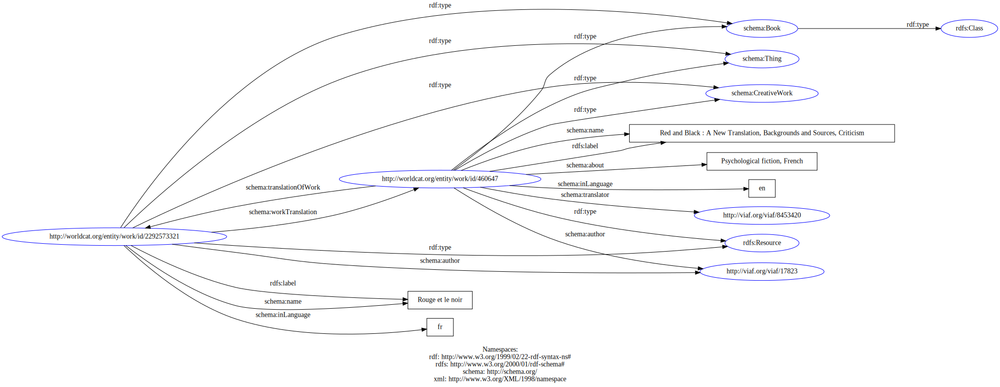

Enter a URL below to see what structured data your page contains. You can alternatively upload a local file or paste some markup.
Loading results...
Enhanced search result preview
Disclaimer: this preview is only shown as a example of what a search engine might display. It is to the discretion of each search engine provider to decide whether your page will be displayed as an enhanced search result or not in their search results pages.
Rouge et le noir
54.197.75.187:5000/examples/schema.org/CreativeWork-Book-translator-translationOfWork-workTranslation-275-jsonld.html
an actual search result may display other content relating to your search terms here.
Content not used in snippet generation:
Rouge et le noir fr Red and Black : A New Translation, Backgrounds and Sources, CriticismRDFa output
No RDFa fund.
<?xml
version='1.0' encoding='utf-8' ?>
<!DOCTYPE html>
<html prefix='rdf: http://www.w3.org/1999/02/22-rdf-syntax-ns# rdfs:
http://www.w3.org/2000/01/rdf-schema# schema: http://schema.org/'
xmlns='http://www.w3.org/1999/xhtml'>
<head>
<base
href='http://54.197.75.187:5000/examples/schema.org/CreativeWork-Book-translator-translationOfWork-workTranslation-275-jsonld.html'
/>
<title>Rouge et le noir</title>
</head>
<body>
<div resource='schema:Book' typeof='rdfs:Class'>
<span class='type'>rdfs:Class</span>
</div>
<div resource='http://worldcat.org/entity/work/id/2292573321'
typeof='schema:Thing schema:CreativeWork schema:Book rdfs:Resource'>
<span class='type'>schema:Thing schema:CreativeWork schema:Book
rdfs:Resource</span>
<h1 property='rdfs:label'>Rouge et le noir</h1>
<div class='property'>
<span class='label'>
schema:author
</span>
<a href='http://viaf.org/viaf/17823'
property='schema:author'>http://viaf.org/viaf/17823</a>
</div>
<div class='property'>
<span class='label'>
schema:inLanguage
</span>
<span property='schema:inLanguage'>fr</span>
</div>
<div class='property'>
<span class='label'>
schema:name
</span>
<span property='schema:name'>Rouge et le noir</span>
</div>
<div class='property'>
<span class='label'>
schema:workTranslation
</span>
<div rel='schema:workTranslation'
resource='http://worldcat.org/entity/work/id/460647'
typeof='schema:Thing schema:CreativeWork schema:Book rdfs:Resource'>
<span class='type'>schema:Thing schema:CreativeWork schema:Book
rdfs:Resource</span>
<h1 property='rdfs:label'>Red and Black : A New Translation,
Backgrounds and Sources, Criticism</h1>
<div class='property'>
<span class='label'>
schema:about
</span>
<span property='schema:about'>Psychological fiction,
French</span>
</div>
<div class='property'>
<span class='label'>
schema:author
</span>
<a href='http://viaf.org/viaf/17823'
property='schema:author'>http://viaf.org/viaf/17823</a>
</div>
<div class='property'>
<span class='label'>
schema:inLanguage
</span>
<span property='schema:inLanguage'>en</span>
</div>
<div class='property'>
<span class='label'>
schema:name
</span>
<span property='schema:name'>Red and Black : A New Translation,
Backgrounds and Sources, Criticism</span>
</div>
<div class='property'>
<span class='label'>
schema:translationOfWork
</span>
<a href='http://worldcat.org/entity/work/id/2292573321'
property='schema:translationOfWork'>http://worldcat.org/entity/work/id/2292573321</a>
</div>
<div
class='property'>
<span class='label'>
schema:translator
</span>
<a href='http://viaf.org/viaf/8453420'
property='schema:translator'>http://viaf.org/viaf/8453420</a>
</div>
</div>
</div>
</div>
</body>
</html>
ttl output
No ttl found.
@base
<http://54.197.75.187:5000/examples/schema.org/CreativeWork-Book-translator-translationOfWork-workTranslation-275-jsonld.html>
.
@prefix rdf: <http://www.w3.org/1999/02/22-rdf-syntax-ns#> .
@prefix rdfs: <http://www.w3.org/2000/01/rdf-schema#> .
@prefix schema: <http://schema.org/> .
@prefix xsd: <http://www.w3.org/2001/XMLSchema#> .
schema:Book a rdfs:Class .
<http://worldcat.org/entity/work/id/2292573321> a schema:Thing,
schema:CreativeWork,
schema:Book,
rdfs:Resource;
rdfs:label "Rouge et le noir";
schema:author <http://viaf.org/viaf/17823>;
schema:inLanguage "fr";
schema:name "Rouge et le noir";
schema:workTranslation
<http://worldcat.org/entity/work/id/460647> .
<http://worldcat.org/entity/work/id/460647> a schema:Thing,
schema:CreativeWork,
schema:Book,
rdfs:Resource;
rdfs:label "Red and Black : A New Translation, Backgrounds and
Sources, Criticism";
schema:about "Psychological fiction, French";
schema:author <http://viaf.org/viaf/17823>;
schema:inLanguage "en";
schema:name "Red and Black : A New Translation, Backgrounds and
Sources, Criticism";
schema:translationOfWork
<http://worldcat.org/entity/work/id/2292573321>;
schema:translator <http://viaf.org/viaf/8453420> .
RDF output
No RDF found.
<?xml
version='1.0' encoding='utf-8' ?>
<rdf:RDF
xml:base='http://54.197.75.187:5000/examples/schema.org/CreativeWork-Book-translator-translationOfWork-workTranslation-275-jsonld.html'
xmlns:rdf='http://www.w3.org/1999/02/22-rdf-syntax-ns#'
xmlns:rdfs='http://www.w3.org/2000/01/rdf-schema#'
xmlns:schema='http://schema.org/'
xmlns:xml='http://www.w3.org/XML/1998/namespace'>
<rdfs:Class rdf:about='http://schema.org/Book'>
</rdfs:Class>
<schema:Thing
rdf:about='http://worldcat.org/entity/work/id/2292573321'>
<rdf:type
rdf:resource='http://schema.org/CreativeWork'></rdf:type>
<rdf:type
rdf:resource='http://schema.org/Book'></rdf:type>
<rdf:type
rdf:resource='http://www.w3.org/2000/01/rdf-schema#Resource'></rdf:type>
<rdfs:label>Rouge
et le noir</rdfs:label>
<schema:author rdf:resource='http://viaf.org/viaf/17823' />
<schema:inLanguage>fr</schema:inLanguage>
<schema:name>Rouge et le noir</schema:name>
<schema:workTranslation>
<schema:Thing
rdf:about='http://worldcat.org/entity/work/id/460647'>
<rdf:type
rdf:resource='http://schema.org/CreativeWork'></rdf:type>
<rdf:type
rdf:resource='http://schema.org/Book'></rdf:type>
<rdf:type
rdf:resource='http://www.w3.org/2000/01/rdf-schema#Resource'></rdf:type>
<rdfs:label>Red
and Black : A New Translation, Backgrounds and Sources,
Criticism</rdfs:label>
<schema:about>Psychological fiction, French</schema:about>
<schema:author rdf:resource='http://viaf.org/viaf/17823' />
<schema:inLanguage>en</schema:inLanguage>
<schema:name>Red and Black : A New Translation, Backgrounds and
Sources, Criticism</schema:name>
<schema:translationOfWork
rdf:resource='http://worldcat.org/entity/work/id/2292573321' />
<schema:translator rdf:resource='http://viaf.org/viaf/8453420' />
</schema:Thing>
</schema:workTranslation>
</schema:Thing>
</rdf:RDF>
JSON+LD output
No json ld found.
{
"@context": {
"schema": "http://schema.org/",
"rdfs": "http://www.w3.org/2000/01/rdf-schema#"
},
"@graph": [
{
"@id": "http://worldcat.org/entity/work/id/2292573321",
"rdfs:label": "Rouge et le noir",
"schema:name": "Rouge et le noir",
"schema:inLanguage": "fr",
"schema:author": {
"@id": "http://viaf.org/viaf/17823"
},
"@type": [
"schema:Thing",
"schema:CreativeWork",
"schema:Book",
"rdfs:Resource"
],
"schema:workTranslation": {
"@id": "http://worldcat.org/entity/work/id/460647"
}
},
{
"@id": "schema:Book",
"@type": "rdfs:Class"
},
{
"@id": "http://worldcat.org/entity/work/id/460647",
"rdfs:label": "Red and Black : A New Translation, Backgrounds and Sources, Criticism",
"schema:name": "Red and Black : A New Translation, Backgrounds and Sources, Criticism",
"schema:inLanguage": "en",
"schema:about": "Psychological fiction, French",
"schema:author": {
"@id": "http://viaf.org/viaf/17823"
},
"@type": [
"schema:Thing",
"schema:CreativeWork",
"schema:Book",
"rdfs:Resource"
],
"schema:translationOfWork": {
"@id": "http://worldcat.org/entity/work/id/2292573321"
},
"schema:translator": {
"@id": "http://viaf.org/viaf/8453420"
}
}
]
}
Graph:
No Graph Found.

Raw structured data extracted from the page:
No structured data detected.
| @id | http://schema.org/Book(2) |
| rdf:type | rdfs:Class |
| @id | http://worldcat.org/entity/work/id/2292573321(1) | ||||||||||||||||||
| rdf:type | schema:Thing schema:CreativeWork schema:Book rdfs:Resource | ||||||||||||||||||
| rdfs:label | Rouge et le noir | ||||||||||||||||||
| schema:author | http://viaf.org/viaf/17823 | ||||||||||||||||||
| schema:inLanguage | fr | ||||||||||||||||||
| schema:name | Rouge et le noir | ||||||||||||||||||
| schema:workTranslation |
|
Parser statistics
| Reader | RDF::RDFa::Reader |
| Statements | 21 |
| Templates | schema:CreativeWork |